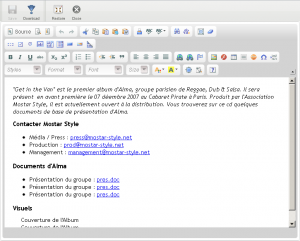

Implementation of the HTML WYSIWYG editor CKEditor. CKEditor is not distributed by default with Pydio, so you must download from http://ckeditor.com/download . Below is a screenshot of the result once active
